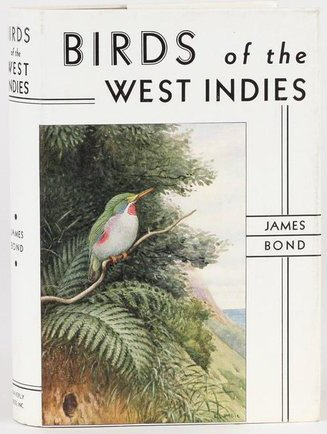

Monday, November the 19th, 2012
back to: title, date or indexes

Mark Steyn summarises fifty years' of Bond film dénouements:
For half a century, the most boring bit in 007 has always been the final 20 minutes when Bond and the girl run around the hollowed-out volcano shooting hundreds of tinfoil-suited extras in golf carts while looking for the big red “Off” button that disconnects the space laser.